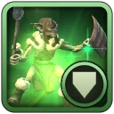
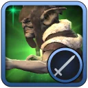
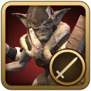
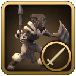

Commander
Pip Quickfingers
Pip Quickfingers, the ranged commander, with the Pickpocket and Brawler builds.
A small, furry and extremely light-fingered menace. Pip darts around the board poisoning enemies and lifting anything that is not nailed down.
Pip Quickfingers is one of the 4 commanders. A commander fights on your board beside your units, grows with your player level and is shaped by the build and talents you choose.
Stats by player level
Pip has no star rank. Each fight uses the row for your current player level, so buying experience makes the commander stronger as well as widening your board. Commanders are offered at round 10, so the first row only matters if your level is still low by then. What each number means is on the stat reference.
| Player level | Health | Attack damage |
|---|---|---|
| 1 to 5 | 1,600 | 90 to 115 |
| 6 | 1,900 | 100 to 125 |
| 7 | 2,200 | 110 to 135 |
| 8 | 2,500 | 120 to 145 |
| 9 | 2,800 | 130 to 155 |
| 10 | 3,100 | 140 to 165 |
At every level
- Time between attacks
- 0.7 seconds
- Wind-up before the hit
- 0.4 seconds
- Armour
- 5
- Magic resistance
- 0%
- Move speed
- 300
- Projectile speed
- 1,500
A commander has no mana bar. Its active abilities run on cooldowns instead, as Mana and casting explains.
Passive ability
Pip has this ability whichever build you take.

Smoke and Mirrors
In the game's words: "The first time Pip drops below half health he vanishes in a puff of smoke: he sheds his debuffs, cannot be targeted for 1.5 seconds and stuns adjacent enemies for 1.5 seconds."
- Cast
- Passive. It is never cast and works for the whole combat.
- When the commander is below 50% health after taking damage (once per combat), it removes all timed debuffs from the commander; gains Smoke Cloud (cannot be targeted by enemies) for 1.5 seconds; and applies Stunned (general) (cannot move, attack or cast) to all enemies within 1 cell of the commander for 1.5 seconds.
Core ability
Whichever build you take, Pip also has this ability.

Toxic Twirl
In the game's words: "Pip spins and flicks poisoned darts at several enemies within 3 cells, dealing physical damage and adding a stack of toxin to each. Pip heals for each dart."
- Cast
- Not cast with mana. It has a cooldown of 3 seconds, counted from the end of each cast, so with the cast point two casts are at least 3.1 seconds apart. The first cast starts 1.5 seconds into combat. The cooldown keeps running while the commander is stunned, but a stunned or silenced commander cannot start a cast.
- Cast point
- 0.1 seconds from the start of the cast to its effect.
- Targets
- 3 (levels 1 to 5), then 4 (levels 6 and 7), then 5 (levels 8 to 10) random enemies within 3 cells.
- Deals 25 (levels 1 to 6), then 35 (levels 7 and 8), then 45 (levels 9 and 10) physical damage to the targets.
- Applies a stack of Pip's Toxin to the targets for the rest of combat: 10 (levels 1 to 6), then 14 (levels 7 and 8), then 18 (levels 9 and 10) physical damage taken per second; stacks up to 10 times.
- Heals the commander for 30 (levels 1 to 6), then 45 (levels 7 and 8), then 60 (levels 9 and 10) health.
The heal comes once per cast, however many targets the ability hits.
Talents
Each row opens when you reach that player level. You keep one option from each row for the rest of the match. These options are the same whichever build you take. A talent that belongs to one build is described under that build. See all talents.
| Player level | Option 1 | Option 2 |
|---|---|---|
| 4 |  Light FeetThe commander: +25% attack speed. Light FeetThe commander: +25% attack speed. |  Padded VestThe commander: +300 maximum health. |
| 6 |  Venom CycloneToxic Twirl becomes Venom Cyclone."Toxic Twirl deals 50% more damage and adds two stacks of toxin." |  Slippery CrewEvery ally in the fight when combat begins, including the commander and the units the commander summons at the start of combat: +10% evasion. Units summoned later in the fight do not get it. Slippery CrewEvery ally in the fight when combat begins, including the commander and the units the commander summons at the start of combat: +10% evasion. Units summoned later in the fight do not get it. |
| 8 |  Smoke BombThe commander also casts Smoke Bomb. Smoke BombThe commander also casts Smoke Bomb. |  Sharp DartsThe commander: +25% attack damage.The damage bonus applies to attacks only, not to ability damage. Sharp DartsThe commander: +25% attack damage.The damage bonus applies to attacks only, not to ability damage. |
| 10 | Set by the build. Pickpocket:  Grand HeistBrawler:  Grand Melee |  Nimble CrewEvery ally in the fight when combat begins, including the commander and the units the commander summons at the start of combat: +8% attack damage, +8% attack speed. Units summoned later in the fight do not get it.The damage bonus applies to attacks only, not to ability damage. Nimble CrewEvery ally in the fight when combat begins, including the commander and the units the commander summons at the start of combat: +8% attack damage, +8% attack speed. Units summoned later in the fight do not get it.The damage bonus applies to attacks only, not to ability damage. |
Build: Pickpocket
Thieving duellist
Robs an enemy every fight and grows stronger with each kill.
Robs the enemy at the start of every fight.
Ability of this build

Pickpocket
In the game's words: "At the start of combat Pip robs a random enemy, which deals 20% less damage and attacks 20 slower, while Pip gains the same. Every enemy Pip kills drops more loot: +15 attack damage and +10 attack speed."
- Cast
- Passive. It is never cast and works for the whole combat.
- At the start of combat, the commander applies Robbed (-20% attack damage, -20% attack speed) to a random enemy for the rest of combat.
- At the start of combat, the commander gains Fresh Loot (+20% attack damage, +20% attack speed) for the rest of combat.
- When the commander kills an enemy, it gains a stack of Spoils (+15 attack damage, +10% attack speed, stacks up to 10 times) for the rest of combat.
Talent of this build
| Player level | Talent |
|---|---|
| 10 | Grand HeistPickpocket becomes Grand Heist."Pickpocket robs two enemies and steals more." |
The other talent options are in the talent table above.
Build: Brawler
Poisoning crowd stunner
Poisons and stuns every enemy at once.
Ropes every enemy into a stunning brawl.
Ability of this build

Free-for-All
In the game's words: "Pip ropes every enemy into a brawl: each takes physical damage, three stacks of toxin and a 1.5 second stun."
- Cast
- Not cast with mana. It has a cooldown of 10 seconds, counted from the end of each cast, so with the cast point two casts are at least 10.1 seconds apart. The first cast starts 10 seconds into combat. The cooldown keeps running while the commander is stunned, but a stunned or silenced commander cannot start a cast.
- Cast point
- 0.1 seconds from the start of the cast to its effect.
- Targets
- All enemies.
- Deals 50 (levels 1 to 5), then 75 / 100 / 125 / 150 / 175 (levels 6 to 10) physical damage to the targets.
- Applies 3 stacks of Pip's Toxin to the targets for the rest of combat: 10 (levels 1 to 6), then 14 (levels 7 and 8), then 18 (levels 9 and 10) physical damage taken per second; stacks up to 10 times.
- Applies Stunned (general) (cannot move, attack or cast) to the targets for 1.5 seconds.
Talent of this build
| Player level | Talent |
|---|---|
| 10 | Grand MeleeFree-for-All becomes Grand Melee."Free-for-All deals 50% more damage and stuns for 2.5 seconds." |
The other talent options are in the talent table above.
Comparing the builds
Pip has 2 builds. The build comes with the commander when it is offered and cannot be changed afterwards. The table shows what is different; the list under it shows what is the same whichever you have.
| Pickpocket | Brawler | |
|---|---|---|
| In short | Thieving duellist | Poisoning crowd stunner |
| Write-up | Robs the enemy at the start of every fight. | Ropes every enemy into a stunning brawl. |
| Abilities only this build has | Pickpocket | Free-for-All |
| Talents only this build has | Grand Heist | Grand Melee |
| Talent choices | 4 | 4 |
- Abilities in every build
- Smoke and MirrorsToxic Twirl
- Talents in every build
- Light FeetPadded VestVenom CycloneSlippery CrewSmoke BombSharp DartsNimble Crew
How Pip plays in a match
These rules are the same for every commander, apart from where Pip stands and which items Pip may hold.
- Choosing. In the preparation phase of round 10 you are shown all 4 commanders. Each comes with one of its builds, drawn at random, and you pick one commander. That preparation phase lasts 10 seconds longer to give you time. If the fight starts before you have chosen, you are given the first commander shown, with the build it was offered with.
- On the board. Pip attacks from range, so the commander arrives in the back row, as near the centre as there is room. You may move it to any other cell of the board, but never to the bench, and it cannot be sold. It does not use up one of your unit places and it does not count toward any alliance. It can hold an item, with these exceptions. A commander has no mana bar, so it cannot hold the items that need a mana ability: Runescribed Quill, Cinder Core, Hourglass Prism, Renewal Orb, Archmage Codex. Pip counts as ranged, so it cannot hold the melee only item Sweeping Warblade.
- Levelling. The commander is always the same level as you, up to level 10. Its stats and the strength of its abilities are read from that level at the start of each fight. At player levels 4, 6, 8 and 10 you choose a talent during preparation. If several are waiting, they are offered lowest level first, and any you have not chosen when the fight starts is settled for you with the first option.
- When it falls. If Pip falls, the commander is out for the rest of that fight only and stands again, at full health, in the next round. Losing the commander costs you nothing beyond its help in the fight. A commander that is still standing when you win adds 1 to the damage your opponent takes, or 2 from round 31, whatever its level.
The full rules are on How commanders work.
Other commanders


Compare them all on the commanders page.